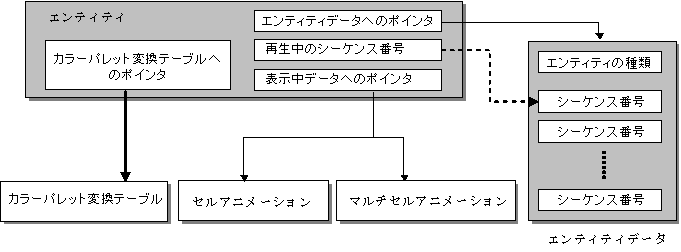

Entity Overview
Conceptual Diagram

Description
Entity is the concept of managing and storing information from the upper layer (user program) of the data structures (cell animations and multicell animations). Entity is located in the uppermost layer of data as the data structure defined internally in G2D. Therefore, future versions may include changes and expanded features for the upper layer (user program).
Internal Data of Entity
Entity contains the following information.
Entity Data Pointer
The pointer to the entity data (.nenr file) read to the main memory is stored here. Entity data is static—it will not be rewritten.
Sequence Number Being Played
The sequence number of the animation that is currently playing is stored here. The Animation Sequence Number corresponds to the sequence number of the animation in the entity data designated by the pointer to the entity data.
Pointer to the Display Data
The pointer to the cell or multicell animation currently being rendered is stored here.
Pointer to the Color Palette Conversion Table
There may be situations where different characters are expressed by changing the color palette used by the same character so a table exists for converting color palettes. The color palette conversion table specifies which color palette number from the sixteen color palettes it is changed to.
See Also
None.
Revision History
12/06/2004 Initial version.